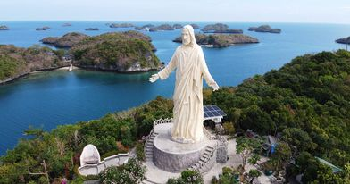

|
|

The Hundred Islands National Park is the first national park and a protected area located in Alaminos, Pangasinan in the northern Philippines. The islands, totaling 124 at low tide and 123 at high tide, are scattered in Lingayen Gulf covering an area of 16.76 square kilometres (6.47 sq mi). Only four of them have been developed for tourism: Marcos Island, Governor Island, Quezon Island, and Children's Island.
The wildlife in this place include bird such as the Philippine duck, white-eared brown-dove, Philippine hawk-cuckoo, Philippine coucal, Philippine bulbul, elegant tit, lemon-throated leaf-warbler, and the grey-backed tailorbird; fish such as thresher sharks, angelfish, and butterflyfish; and crustaceans such as ghost crabs and hermit crabs
The national park was created by Presidential Proclamation No. 667, covering an area of 16.76 square kilometres (6.47 sq mi) and signed by President Manuel L. Quezon on January 18, 1940, for the benefit and enjoyment of the people of the Philippines and known as the Hundred Islands National Park (HINP). The Republic Act No. 3655 signed on June 22, 1962, created the Hundred Islands Conservation and Development Authority (HICDA), for the conservation, development and management of HINP. The park including Lucap Bay was transferred from HICDA to the Philippine Tourism Authority (PTA) by virtue of Section 35 of Presidential Decree No. 564.
Back to Top of page
|